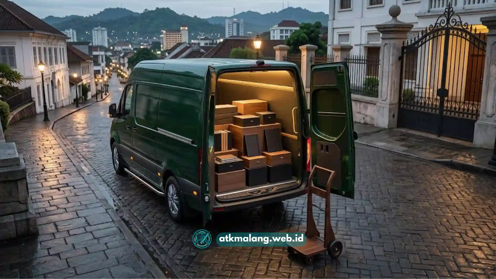

Belanja Alat Tulis Kantor secara eceran tanpa perencanaan menjadi salah satu penyebab utama membengkaknya biaya operasional perusahaan.
Staf purchasing dan HR manager di berbagai perusahaan Malang Raya kerap mendapati anggaran ATK bulanan meleset jauh dari proyeksi, padahal kebutuhan yang dipenuhi sebenarnya tidak berubah signifikan dari bulan ke bulan.
Kondisi inilah yang mendorong semakin banyak perusahaan beralih ke skema paket atk bulanan malang sebagai solusi pengadaan yang lebih terukur, efisien, dan mudah diaudit.
Daftar Isi
Rangkuman Manfaat Paket ATK Bulanan Malang
Memilih paket atk bulanan malang dari distributor terpercaya terbukti memangkas opex kantor hingga tiga puluh persen melalui sistem kontrol inventaris satu pintu, harga grosir yang lebih murah dibanding ritel, kepastian jadwal pengiriman, serta ketersediaan stok yang konsisten.
ATK Malang (atkmalang.web.id) menyediakan solusi paket ATK bulanan kustom bergaransi gratis ongkir di Malang Raya, mencakup Kota Malang, Kabupaten Malang, dan Kota Batu.
Sehingga tim purchasing tidak perlu lagi mengelola belanja eceran yang tidak terencana.
Akar Masalah, Audit Pemborosan ATK Konvensional
Pengalaman menangani ratusan klien korporat di Malang Raya menunjukkan pola pemborosan yang hampir selalu berulang setiap bulan.
Sebelum menyusun paket ATK yang tepat, tim pengadaan perlu memahami dulu titik-titik kebocoran anggaran yang paling sering terjadi pada model belanja eceran konvensional.
Pemborosan Penggunaan Kertas HVS
Kertas HVS menjadi item dengan tingkat pemborosan tertinggi di hampir setiap kantor.
Tanpa sistem kontrol distribusi yang jelas, satu divisi bisa menyimpan stok berlebih sementara divisi lain kehabisan mendadak dan terpaksa membeli darurat dengan harga eceran yang lebih mahal.
Pencetakan dokumen ganda akibat kesalahan format juga menambah konsumsi kertas tanpa nilai tambah bagi perusahaan.
Bolpoin dan Alat Tulis yang Sering Hilang
Alat tulis kecil seperti bolpoin, penggaris, dan stabilo termasuk kategori barang dengan tingkat kehilangan tertinggi karena mudah berpindah tangan antarmeja kerja.
Jika pengadaan dilakukan tanpa pencatatan distribusi per divisi, kehilangan semacam ini nyaris mustahil dilacak dan terus berulang setiap periode.

Pengiriman gratis ongkir dan terjadwal membantu efisiensi waktu tim logistik kantor.Stapler dan Alat Kantor yang Cepat Rusak
Stapler, perforator, dan alat kantor sejenis sering rusak lebih cepat dari usia pakai wajarnya karena penggunaan bersama tanpa jadwal perawatan atau penggantian terjadwal.
Pembelian mendadak untuk mengganti alat rusak biasanya dilakukan secara eceran dengan harga yang jauh lebih tinggi dibanding pembelian terencana dalam jumlah besar.
Menyusun Checklist Paket ATK Bulanan Terstruktur
Solusi atas ketiga titik kebocoran di atas terletak pada penyusunan checklist paket ATK bulanan yang disesuaikan dengan jumlah karyawan dan pola konsumsi riil setiap divisi.
Checklist yang baik mencakup empat kategori utama, kebutuhan kertas dan cetak, alat tulis harian, perlengkapan arsip seperti map dan folder, serta alat kantor pendukung seperti stapler dan perforator.
Penyusunan checklist idealnya melibatkan data historis konsumsi tiga bulan terakhir sebagai dasar perhitungan kuota bulanan per divisi.
Dengan kuota yang jelas, setiap divisi memiliki batas pemakaian yang terukur dan tim purchasing dapat memproyeksikan opex ATK bulanan dengan akurasi jauh lebih tinggi dibanding metode belanja eceran.
Perbandingan Paket ATK Bulanan Malang
Berikut matriks perbandingan tiga tipe paket atk bulanan malang yang umum digunakan berdasarkan skala jumlah karyawan, sebagai gambaran awal sebelum konsultasi kebutuhan spesifik.
| Parameter | Paket Startup (20 Karyawan) | Paket Medium Corporate (50 Karyawan) | Paket Eksekutif (100 Karyawan) |
|---|---|---|---|
| Kertas HVS/Cetak | 10 rim per bulan | 25 rim per bulan | 50 rim per bulan |
| Alat Tulis Harian | 40 pcs bolpoin, 20 pcs stabilo | 100 pcs bolpoin, 50 pcs stabilo | 200 pcs bolpoin, 100 pcs stabilo |
| Map & Folder Arsip | 30 pcs map plastik/kertas | 75 pcs map plastik/kertas | 150 pcs map plastik/kertas |
| Estimasi Harga Grosir | Rp1.500.000 - Rp2.000.000 | Rp3.500.000 - Rp4.500.000 | Rp7.000.000 - Rp9.000.000 |
| Benefit Pengiriman | Gratis ongkir 1x/bulan | Gratis ongkir 2x/bulan + jadwal tetap | Gratis ongkir mingguan + prioritas stok |
Estimasi harga bersifat indikatif dan dapat disesuaikan dengan spesifikasi merek serta kualitas kertas yang dipilih. Konsultasi lebih detail mengenai kuota per item dapat dilakukan langsung melalui tim pengadaan ATK Malang.
Kenapa Perusahaan Malang Raya Memilih ATK Malang
Sebagai suplier atk malang terdekat yang berfokus melayani wilayah Malang Raya, ATK Malang membangun sistem distribusi yang memungkinkan pengiriman terjadwal tanpa membebani anggaran transportasi klien.
Setiap paket alat tulis kantor malang disusun berdasarkan kebutuhan riil, bukan katalog standar yang kaku, sehingga opex kantor benar-benar mencerminkan konsumsi aktual perusahaan.
Detail lengkap variasi paket ATK bulanan dapat dilihat pada halaman produk, sementara perusahaan yang membutuhkan volume lebih besar dapat menjajaki opsi atk grosir malang terdekat untuk mendapatkan skema harga yang lebih kompetitif.
Pengeluaran opex kantor yang tidak terkendali umumnya bukan disebabkan oleh kebutuhan ATK yang benar-benar tinggi, melainkan oleh pola pembelian eceran yang tidak terencana.
Penyusunan paket atk bulanan malang yang disesuaikan dengan skala perusahaan terbukti menjadi solusi paling efektif untuk memangkas pemborosan sekaligus menyederhanakan proses audit anggaran bulanan.